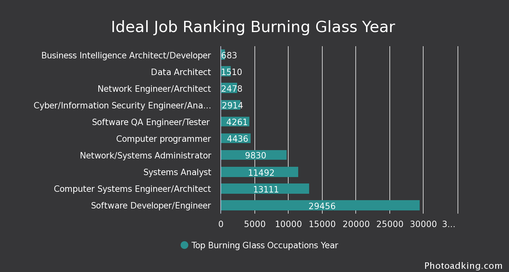
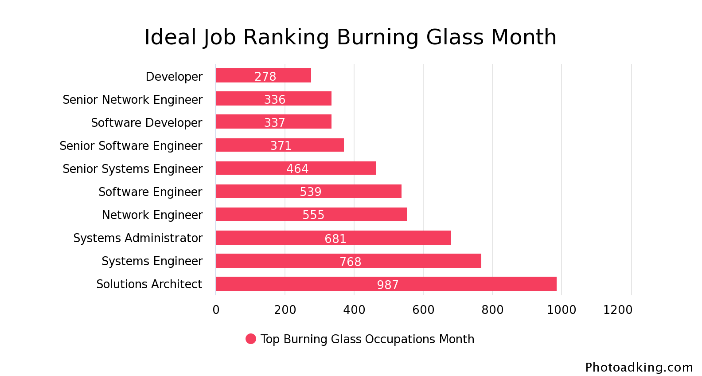
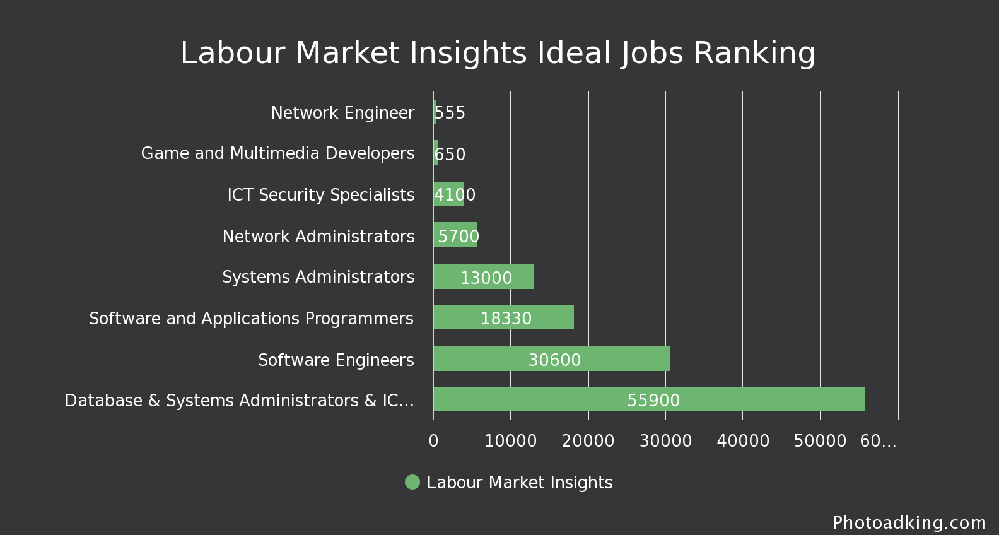

In this section we look at the ranking for demand for Ideal Jobs and the collective skills for general and IT.
listed below are the titels for each Ideal job.
Looking at the data given for the demand of the ideal jobs we were able to make graphs showing the lowest to highest for both ideal and similar jobs. There is also a table showing the shortage in Australia and the future demand for the ideal jobs.   
| No Shortage | Shortage | |
|---|---|---|
| Moderate Future Demand | ||
| Strong Future Demand |
|
|
There are many skills for both general and IT-Specific for our group which was done in graphs and pie charts for each question to make it easier to see the rankings of them.
Phillip Abboud: After thinking about my ideal job multiple times since the first assignment I have decided not to change this. I am really intrigued by the work that Network Administrators take apart in and am excited to one day be able to troubleshoot and deploy network infrastructure.
Stewart Altoft: I have not changed my opinion on my ideal job. According to the graphs Cyber security is not the most ideal position though it isn’t the least desirable meaning the job prospects are positive and all though it requires a lot of training. I still believe I will find Cyber Security a challenging and rewarding career. I have however enjoyed collaborating on GitHub with my team. I am surprised about how much I have enjoyed writing code. It has most definitely got me curious and given me a nudge to want to learn more. This could well be the start of a new hobby.
Jihn Nyen Chong: My opinion of my ideal job has not changed as I still believe that I would enjoy the tasks required of that line of technology. Also, the job prospects in my desired field look quite promising.
Daniel Gooden: I still am excited about becoming a fullstack engineer and am still pursuing this ideal job.
Jamie Virgen: My opinion has not changed because I would rather do my ideal job which I find fun and I enjoying learning the skills required for it rather than trying to learn something that I find no enjoyment in.